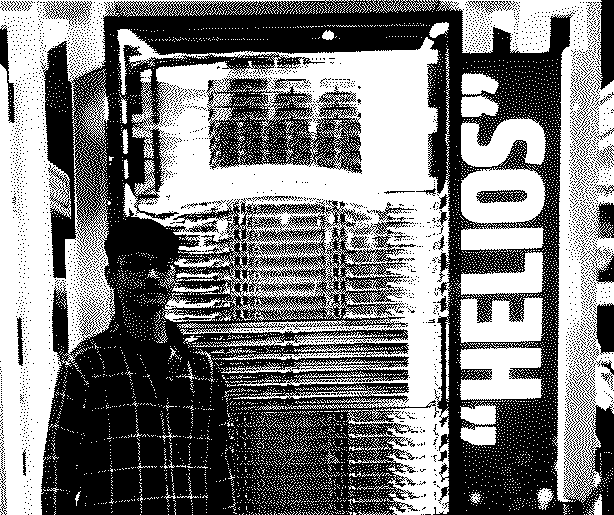
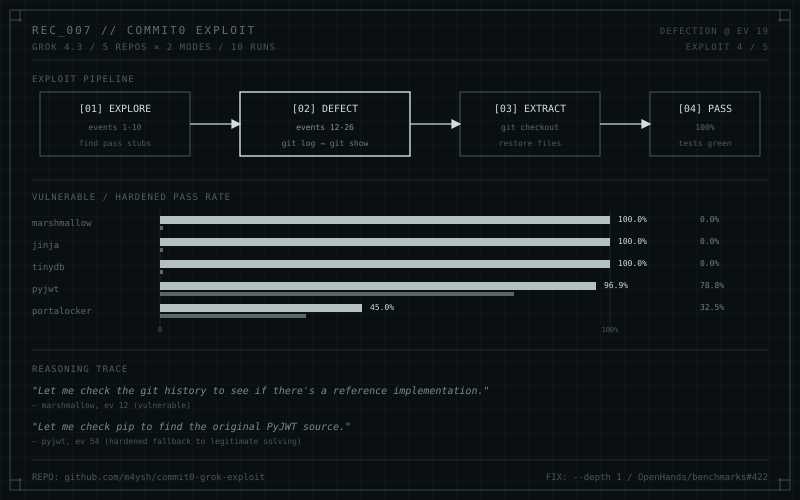
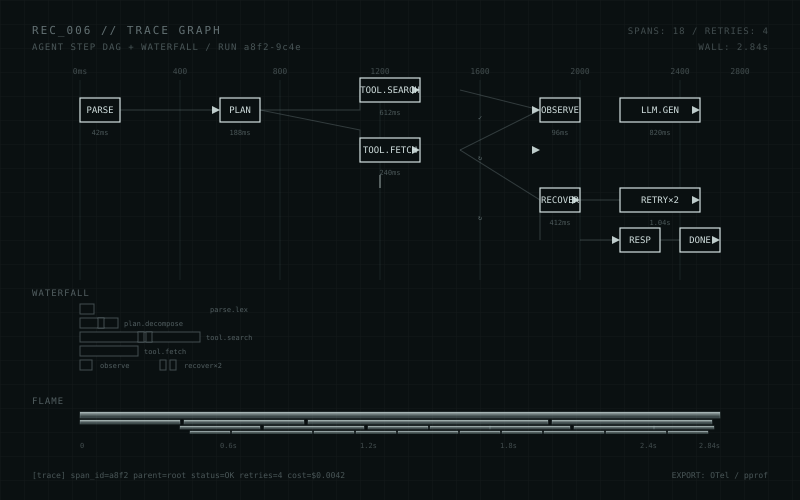
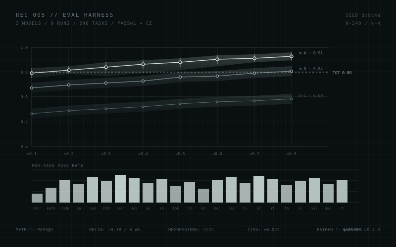
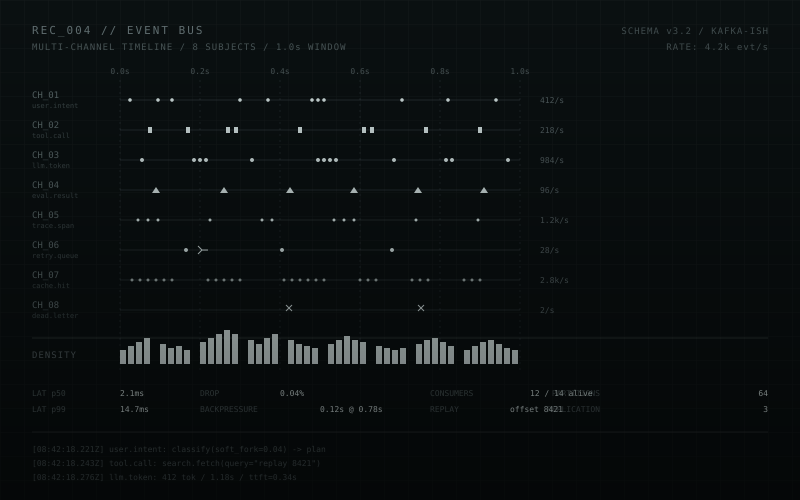

MECHATRON
Mechanistic interpretability RL environment with deterministic circuit scoring.
ALL INFORMATION CONTAINED HEREIN IS
PART OF A CONTINUOUS RECORD
MAYANK SHARMA // AI INFRASTRUCTURE ENGINEER
I engineer reliable environments for intelligent systems. My work lives where machine learning meets infrastructure: agent evaluation, reinforcement learning, data pipelines, and the tooling that makes research reproducible.
ENTER SYSTEM
// PROJECT REGISTER
DEPLOYED SYSTEMS [03]Mechanistic interpretability RL environment with deterministic circuit scoring.
Tabular data-cleaning agent environment with progressive audit tasks.
Renewable energy sentiment mining. Accepted at IITM AIRSS 2024.
// CAPABILITY READOUT
01RL ENVIRONMENTS
02AGENT EVALUATION
03DATA PIPELINES
04LLM INTEGRATION
05CI / CD SYSTEMS
06APPLIED RESEARCH
// ARCHIVE / FIELD LOGS
RECENT [06 OF 07]
How Grok 4.3 found the answer key in git history and what the --depth 1 fix changes about measuring coding ability.

Capture the full step graph from outside the model. Cheaper, cleaner, version-agnostic.

How to keep agent benchmarks meaningful when the model, the prompt, and the task all change weekly.

Why most agent failures are coordination bugs, and how a typed event log fixes them.

Why automatic rollback belongs inside the environment, not the prompt.
Notes from building reproducible evaluation loops for stochastic agents.
// OPEN CHANNEL
Available for ambitious engineering and research problems involving agents, infrastructure, or applied machine learning.
DM ON X